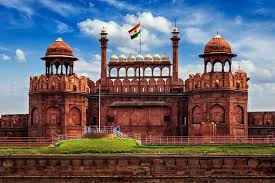
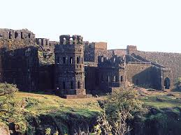
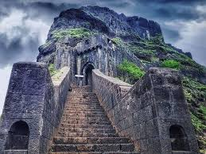
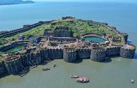

Heritage Sites
Red Fort

Red Fort Informtion
- Location: Situated in the heart of Old Delhi, the Red Fort stands as a symbol of India's rich cultural heritage
- Construction: The fort was built by the Mughal emperor Shah Jahan in the 17th century,
between 1638 and 1648, as the palace for his new capital, Shahjahanabad
- Architecture: It is renowned for its magnificent red sandstone walls, which gave it its name
The fort's architecture blends Persian, Timurid, and Indian styles
- Significance: The Red Fort was the main residence of the Mughal emperors for nearly 200 years,
serving as the political and ceremonial center of the Mughal Empire
- UNESCO World Heritage Site: In 2007, the Red Fort was designated as a
UNESCO World Heritage Site for its cultural significance and historical importance
Sindhudurga Fort

Sindhudurga Fort Information
- Location: Situated in the Arabian Sea off the coast of Maharashtra, India
- Construction: Built by Chhatrapati Shivaji Maharaj, the Maratha king, in 1664
- Architecture: Features a unique zigzag design to withstand strong sea waves and enemy attacks
- Strategic Importance: Sindhudurg Fort served as a key naval base to control the activities
of foreign powers in the Arabian Sea
- Attractions: Offers stunning views of the sea, historical artifacts, and the famous temple of Bhavani Mata
Raigad Fort

Raigad Fort Information
- Location: Raigad Fort is located in the Raigad district of Maharashtra, India
- History: It was originally built by Chandrarao More of Jawli,
a king of the Maratha region in the 10th century
- Architecture: Raigad Fort is known for its strategic location atop a hill,
offering panoramic views of the surrounding landscape
- Fortifications: It is surrounded by massive walls and bastions, with multiple gateways leading into the fort complex
TourismTourism: Today, the fort is a popular tourist destination, attracting history enthusiasts, trekkers, and pilgrims alike
Lohagad Fort

Lohagad Fort Information
- Location: Lohagad Fort is situated near the hill station of Lonavala in Maharashtra, India
- Historical Significance: Built during the Satavahana dynasty, it was later captured by
Shivaji Maharaj in the 17th century and became a crucial part of the Maratha Empire
- Architecture: The fort showcases impressive architectural features,
including sturdy walls, gates, and intricate water storage tanks
- Strategic Importance: Lohagad served as a strategic outpost to control the trade routes between Konkan and Pune.
- Scenic Beauty: Offers breathtaking views of the surrounding valleys and lush green landscapes
Jinjira Fort

Jinjira FortInformatin
- Location: Situated on Khanderi Island, about 5 kilometers off the coast of Maharashtra in the Arabian Sea
- History: Constructed by the Siddis, African-origin Muslim rulers, in the 17th century
as a strategic naval outpost to control maritime trade
- Architecture: Built primarily of basalt rock, the fort features sturdy walls and bastions,
showcasing a blend of Indian and Islamic architectural styles
- Attractions: The fort offers a glimpse into the maritime history of the region, with its cannons,
watchtowers, and remnants of old structures